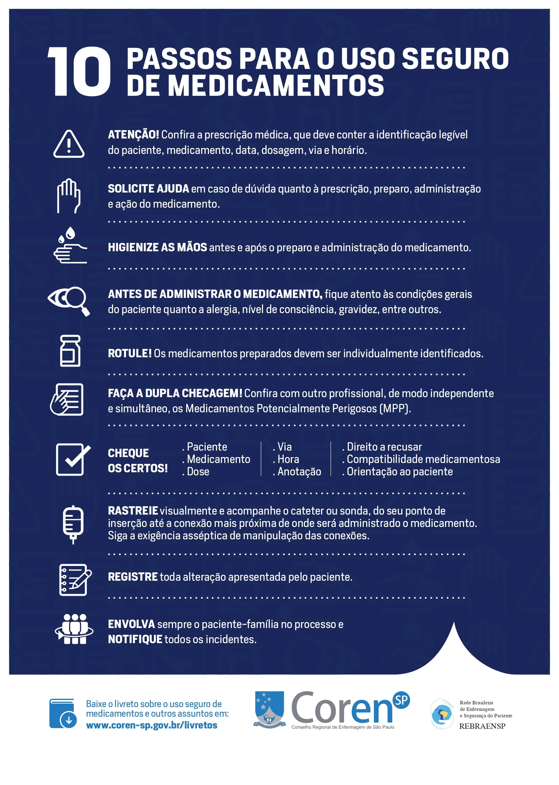

[sv] [sv] [sv] [sv] VÄRLDSHÄLSOORGANISATIONEN (WHO). Läkemedelssäkerhet i högrisksituationer. Genève: WHO, 2018.
[sv] [sv] [sv] [sv] Kontrollera om läkemedlets farmaceutiska presentation (tablett, vätska, injicerbar etc.) är lämplig för administreringsvägen och patienten.
[sv] [sv] [sv] [sv] flagga-ryssland.webb
[sv] [sv] [sv] [sv] Brasiliens federala omvårdnadsråd (COFEN). Resolutioner och tekniska yttranden om läkemedelsadministration. Tillgänglig på: www.cofen.gov.br. Hämtad den: [Datum för åtkomst].
- [sv] [sv] [sv] [sv] Tillbaka till toppen[sv] [sv] [sv] [sv] Polska
- [sv] [sv] [sv] [sv] av[sv] [sv] [sv] [sv] Deltid
- [sv] [sv] [sv] [sv] sv[sv] [sv] [sv] [sv] tillbakaTillToppBtn
- [sv] [sv] [sv] [sv] 8 - Korrekt formulär:[sv] [sv] [sv] [sv] RU
- [sv] [sv] [sv] [sv] AV[sv] [sv] [sv] [sv] bandeira-alemanha.webp
- [sv] [sv] [sv] [sv] Tyska[sv] [sv] [sv] [sv] es
- [sv] [sv] [sv] [sv] det[sv] [sv] [sv] [sv] flagg-sweden.webb
- [sv] [sv] [sv] [sv] flag-italy.webp[sv] [sv] [sv] [sv] Ryska
- [sv] [sv] [sv] [sv] långknapp[sv] [sv] [sv] [sv] DET
- [sv] [sv] [sv] [sv] Tillbaka till toppen av sidan[sv] [sv] [sv] [sv] ko
[sv] [sv] [sv] [sv] Italienska
[sv] [sv] [sv] [sv] fr
[sv] [sv] [sv] [sv] vi
[sv] [sv] [sv] [sv] SV